SDGs (Sustainable Development Goals) adalah agenda pembangunan berkelanjutan yang diadopsi Indonesia untuk mencapai kemajuan sosial, ekonomi, dan lingkungan hingga tahun 2030. Pemerintah Indonesia mengintegrasikan SDGs ke dalam rencana pembangunan nasional agar setiap kebijakan mendukung kesejahteraan masyarakat. Berbagai program dilakukan, seperti pengentasan kemiskinan, peningkatan kualitas pendidikan, serta perluasan akses kesehatan. Indonesia juga berupaya menjaga lingkungan dengan mengurangi emisi, melindungi laut, dan mengelola hutan secara berkelanjutan. Selain pemerintah, masyarakat, sekolah, dan sektor swasta ikut berperan dalam mencapai target SDGs agar pembangunan lebih merata dan berkelanjutan.


 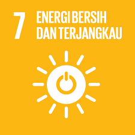
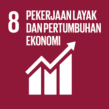
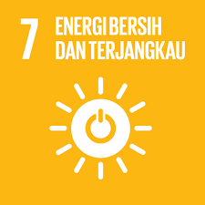
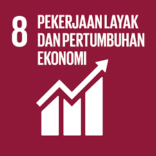

 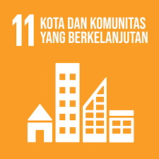
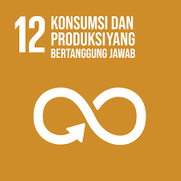
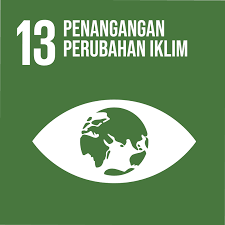
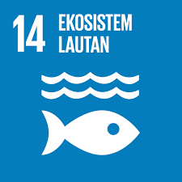
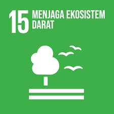
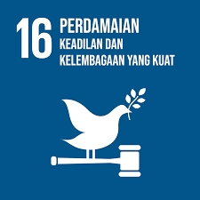
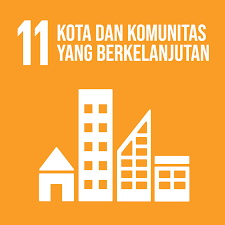
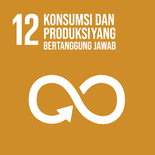
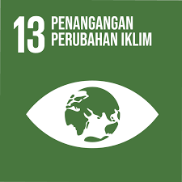
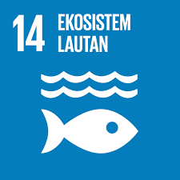
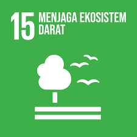
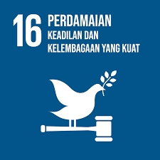

SDGs 4 bertujuan memastikan semua orang mendapatkan pendidikan yang inklusif, bermutu, dan setara. Fokus utamanya adalah memberikan akses pendidikan yang berkualitas mulai dari PAUD hingga perguruan tinggi tanpa diskriminasi. Indonesia mendukung tujuan ini dengan meningkatkan sarana sekolah, pelatihan guru, serta kurikulum yang relevan dengan kebutuhan zaman. Program beasiswa, bantuan siswa miskin, dan sekolah ramah anak juga dikembangkan agar tidak ada peserta didik yang tertinggal. SDGs 4 menekankan pentingnya keterampilan abad ke-21 seperti literasi digital, berpikir kritis, dan kemampuan kolaborasi untuk menghadapi tantangan global. Dengan tercapainya SDGs 4, diharapkan semua warga Indonesia memiliki kesempatan belajar yang sama dan dapat meningkatkan kualitas hidupnya.